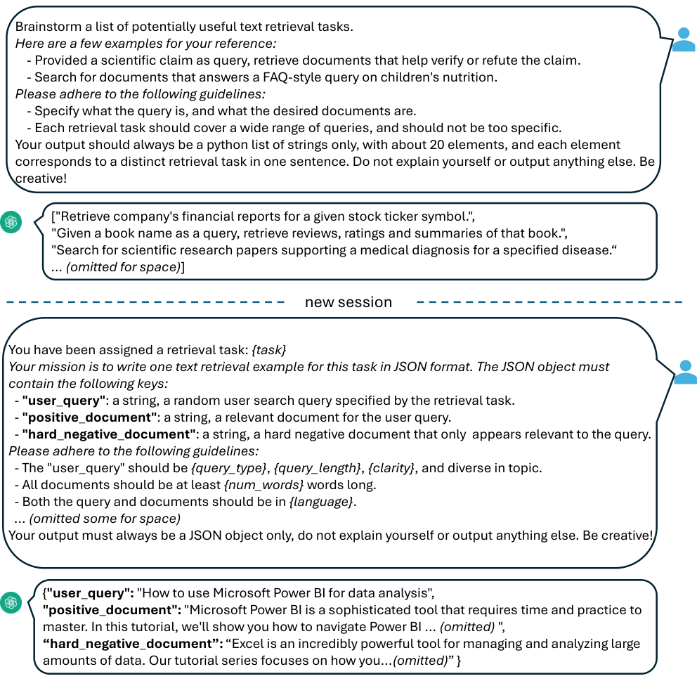
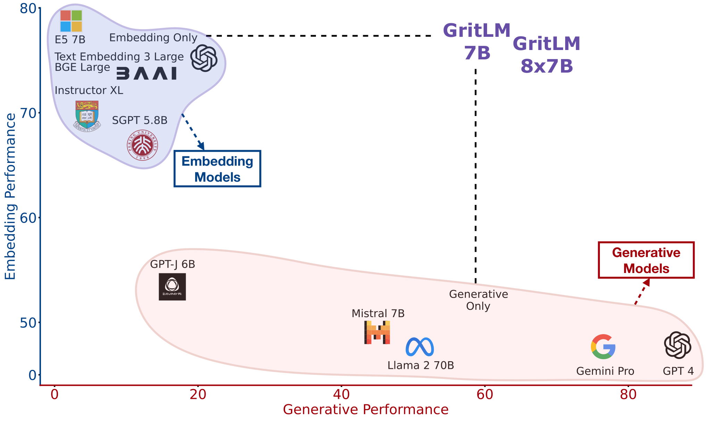
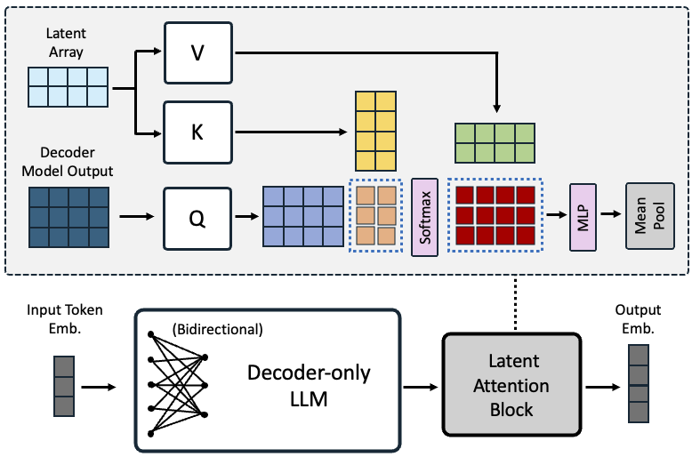
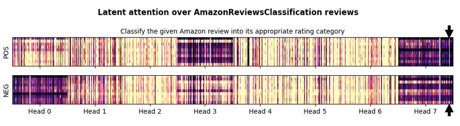
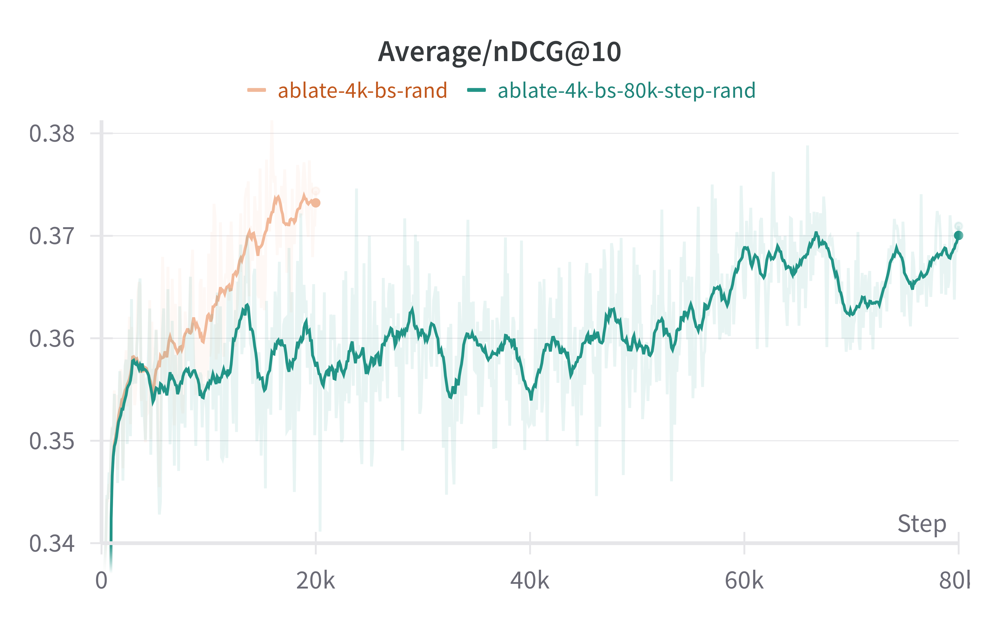
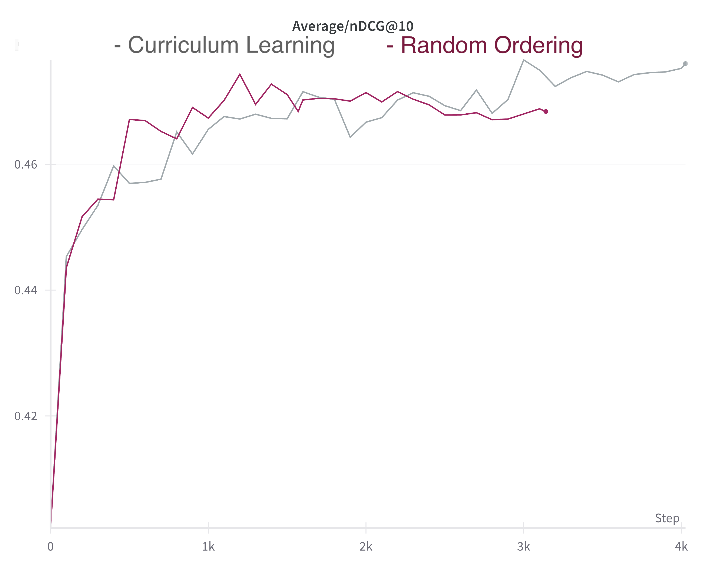
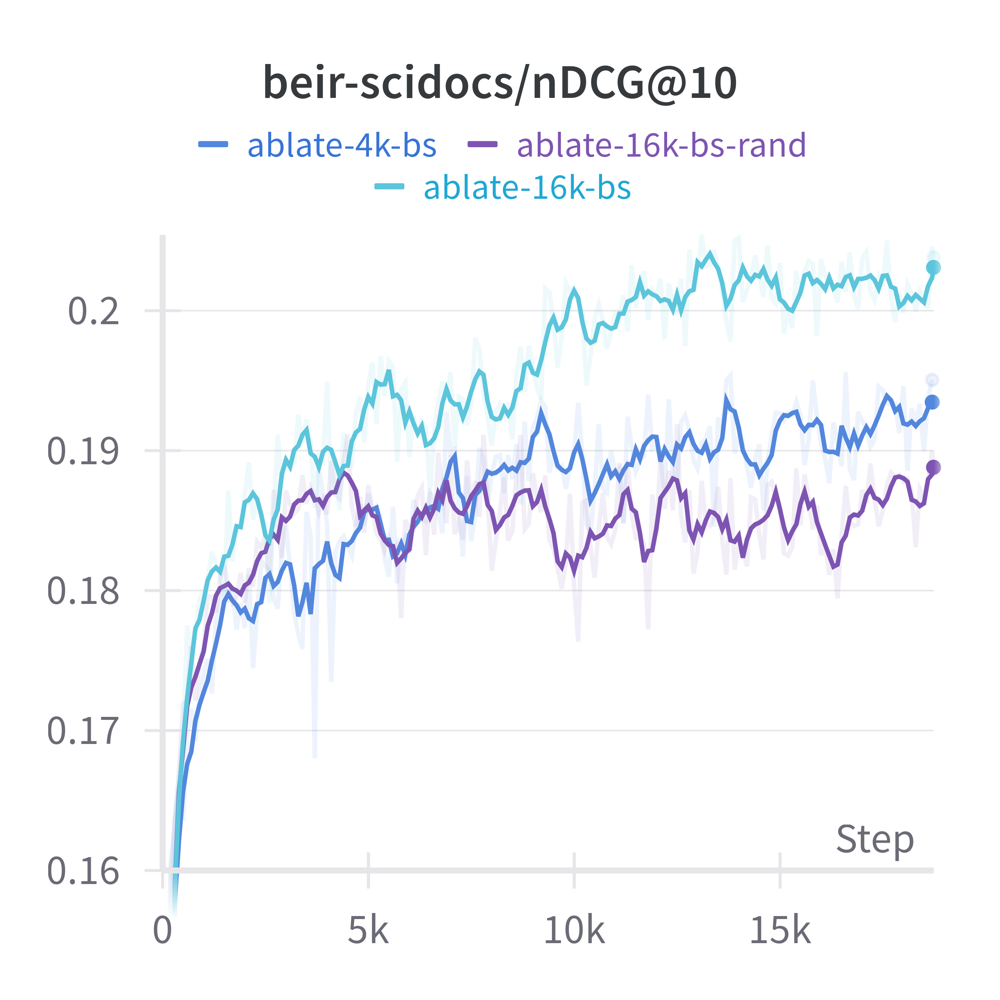
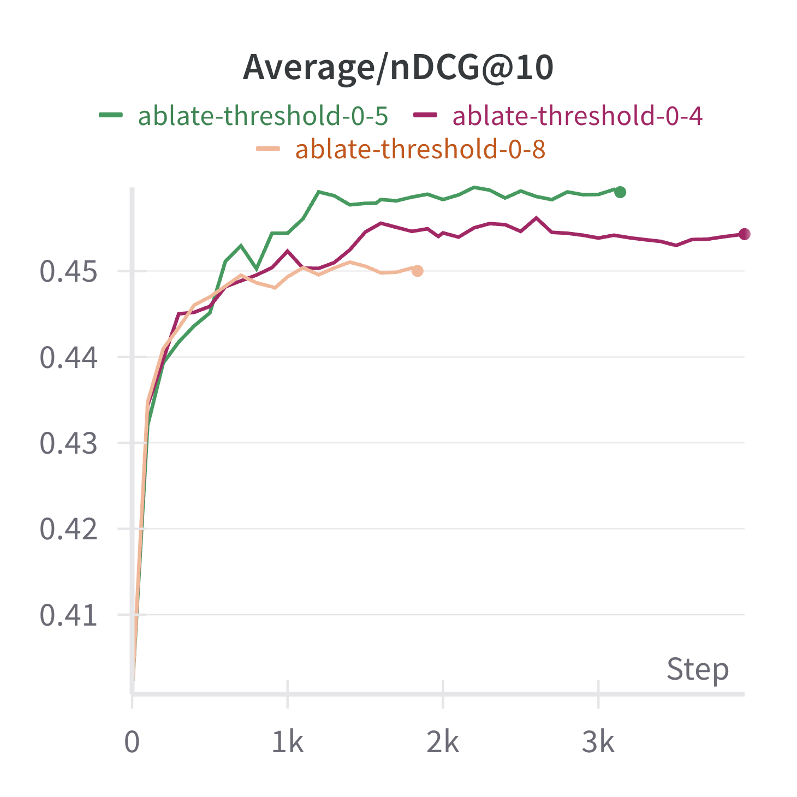
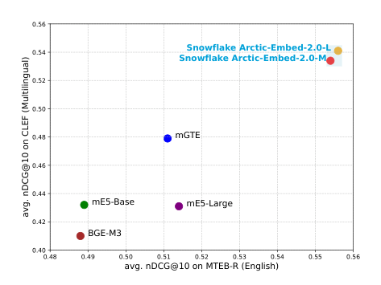
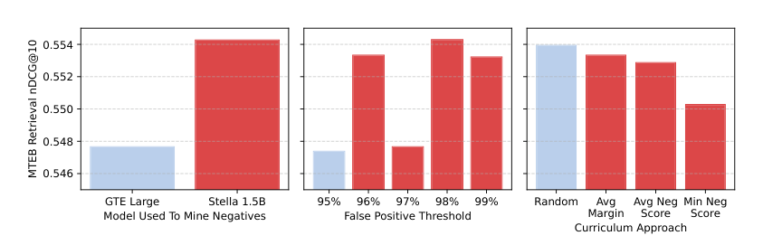

LLM-Embedding 冲榜路线：E5-Mistral / NV-Embed-v2 / GritLM / SFR-2 / Arctic-Embed v2 / Stella¶
paper（按讨论顺序）：E5-Mistral (Microsoft 2023) · GritLM (Contextual AI + MS 2024) · NV-Embed / NV-Embed-v2 (NVIDIA 2024, ICLR 2025) · SFR-Embedding blog (Salesforce 2024) · SFR-Embedding-2R blog (2024) · Arctic-Embed v1 (Snowflake 2024) · Arctic-Embed 2.0 (Snowflake 2024) · Stella / Jasper（同队；见 Jasper 详解） code / weights：intfloat/e5-mistral-7b-instruct · ContextualAI/gritlm · nvidia/NV-Embed-v2 · Salesforce/SFR-Embedding-2_R · Snowflake/snowflake-arctic-embed-l-v2.0 · dunzhang/stella_en_1.5B_v5 refs：E5 (Wang 2022) · INSTRUCTOR (Su 2022) · LLM2Vec (BehnamGhader 2024) · Perceiver (Jaegle 2021) · NV-Retriever (Moreira 2024) · Matryoshka Representation Learning (Kusupati 2022) backbone：几乎都是 Mistral-7B / Mixtral 8×7B / gemma-2 / Qwen2 / XLM-R（LLM 骨干为主，Arctic 家族保留 BERT-like 小尺寸） date：E5-Mistral 2023-12 → GritLM 2024-02 → Arctic-Embed v1 2024-05 → NV-Embed 2024-05 → SFR-2 2024-07 → NV-Embed-v2 2024-08 → Stella-v5 2024-08 → Arctic-Embed 2.0 2024-12 modality：文本 languages：英文为主（E5-Mistral/GritLM/NV-Embed/SFR/Stella）；多语（Arctic-Embed 2.0 / mE5-Mistral）
本文把 2024 年MTEB 冲榜的六个头部一档放在一张图里读，只讲方法差异 + 可组装的积木 + 消融结论。目标：读完能自己判断「加不加 bi-attention、要不要 latent pool、如何选 pooling / hard neg 阈值 / 两阶段任务混合」，而不是记 model 名字。
一句话定位¶
这批模型在 2024 年把 MTEB 平均分从 66（E5-Mistral）推到 72.31（NV-Embed-v2）。它们共同回答的是：如何把已经预训练好的 7B LLM 改造成 SOTA 文本嵌入器。核心配方五步（每篇论文差别只是「哪一步换个花样」）：
- 骨干：Mistral-7B / Mixtral / gemma-2 / Qwen2（LLM 已经在几 T token 上做过语言建模）
- 注意力：Causal 换 Bidirectional（NV-Embed / GritLM 直接改，LLM2Vec 走 MNTP 补 warm-up）
- 池化：EOS token / mean pool / Latent Attention layer（NV-Embed 提出）
- 训练：两阶段指令微调 —— stage 1 检索类 + hard neg + in-batch，stage 2 混入非检索（分类/聚类/STS）关闭 in-batch neg
- 数据：LLM 合成（E5-Mistral 500k）+ 公开数据集 + positive-aware hard neg（NV-Retriever）+ CE 蒸馏 soft label
MTEB 主表（截 2024-10 ICLR 提交日）：
| 模型 | Params | MTEB Avg | Retrieval (BEIR) | 提出方 | 训练特点 |
|---|---|---|---|---|---|
| NV-Embed-v2 | 7.85B | 72.31 | 62.65 | NVIDIA | Latent attention + 两阶段指令 |
| Stella-1.5B-v5 | 1.5B | 71.19 | 61.01 | 与 Jasper 同队 | 蒸馏 + Token Compression |
| bge-en-icl (zero-shot) | 7.14B | 71.24 | 61.67 | BAAI | ICL few-shot 前缀 |
| SFR-Embedding-2R | 7.11B | 70.31 | 60.18 | Salesforce | 任务同类批 + 全批 hard neg 蒸馏 |
| gte-Qwen2-7B-instruct | 7.6B | 70.24 | 60.25 | Alibaba | 双向 + 指令 + 多任务微调 |
| bge-multilingual-gemma2 | 9B | 69.88 | 59.24 | BAAI | gemma-2 骨干 + 多语指令 |
| NV-Embed-v1 | 7.85B | 69.32 | 59.36 | NVIDIA | 上一版 |
| SFR-Embedding-Mistral | 7B | 67.56 | 59.00 | Salesforce | E5-Mistral 后训 |
| GritLM-7B | 7B | 66.76 | 57.41 | Contextual AI | Gen + Rep 一体 |
| E5-Mistral-7B-instruct | 7B | 66.63 | 56.90 | Microsoft | 500k GPT-4 合成 + 1k 步微调 |
| OpenAI text-embedding-3-large | 未公开 | 64.59 | 55.44 | OpenAI | 商业闭源 |
谱系与位置¶
E5 (BERT/XLM-R 骨干, 2022)
│
├── E5-Mistral (2023-12)：换 LLM 骨干，500k GPT-4 合成 + 1k 步微调，最简 baseline
│ │
│ ├── SFR-Embedding-Mistral (2024-05)：在 E5-Mistral 上继续微调，任务同类批
│ │ │
│ │ └── SFR-Embedding-2R (2024-07)：+ 全批 hard neg 蒸馏
│ │
│ └── Linq-Embed-Mistral (2024)：LLM 精修数据
│
├── GritLM (2024-02)：生成 + 表征双 loss 一体
│
├── NV-Embed / NV-Embed-v2 (2024-05 / 08)：从零训 Mistral，Latent Attention + 两阶段
│ │
│ └── NV-Retriever (2024)：positive-aware hard neg 单独出的方法论
│
├── Arctic-Embed v1 (2024-05)：BERT 骨干 22M~334M，数据配方精修
│ │
│ └── Arctic-Embed 2.0 (2024-12)：+ 多语 + MRL 两阶段
│
├── LLM2Vec (2024-04)：三步（Bi + MNTP + SimCSE），无监督
│
├── bge-en-icl / bge-multilingual-gemma2 (2024)：BAAI 的 LLM-Emb 变体
│
├── gte-Qwen / QZhou-Embedding / Conan-embedding-v2：中文/多任务大厂线
│
└── Stella / Jasper (2024)：蒸馏 + Token Compression 冲榜路线
后面几节按方法差异逐个展开，共同点抽到「六个可插拔积木」一节。
共同的六个积木¶
2024 年冲榜配方 = 从这六个组件里选一套，几乎所有模型都能被完整拆开：
积木 1：骨干与规模¶
| 骨干 | 参数 | 采用者 |
|---|---|---|
| Mistral-7B | 7B | E5-Mistral、GritLM-7B、NV-Embed、SFR、Linq |
| Mixtral 8×7B | 47B | GritLM 8×7B |
| gemma-2-9B | 9B | bge-multilingual-gemma2 |
| Qwen2-7B | 7B | gte-Qwen2、QZhou-Embedding |
| Qwen2.5-3B / Llama-3.2-3B | 3B | 蒸馏后的 3B 版（见 NV-Embed 附录 A） |
| Sheared-LLaMA 1.3B | 1.3B | LLM2Vec 最小档 |
| XLM-R Large | 560M | Arctic-Embed v2 Large、bge-m3 |
| BERT-Large / MiniLM | ≤334M | Arctic-Embed v1、BGE C-Pack、Nomic |
观察：7B 是 2024 年的黄金尺寸——精度饱和且推理成本可控。3B 蒸馏也够用；1.5B（Stella）需要 Token Compression 才能追分。
积木 2：注意力方向¶
Decoder 原生因果注意力对嵌入不友好（每个 token 看不到未来）。三种改法：
- 直接去掉 causal mask，改双向（NV-Embed、GritLM Embed 模式）：最简单，但只在微调阶段才安全（预训练权重已经是 causal 建模出来的）；实测有效。
- 先做 MNTP 补 warm-up（LLM2Vec）：加一步 masked next-token prediction，让权重先适应「能看到未来」；步骤更多但对 base LLM 更温和。
- 保留 causal，做特殊 pooling（E5-Mistral、SGPT）：EOS token 就是「唯一能看见所有前文的位置」；简单但受限于 last token 偏置。
三种做法基本等效，工程复杂度递增：去 mask < MNTP < causal + 特殊 pool。选哪一种通常看训练 budget 和 base LLM 的稳定性。
积木 3：Pooling¶
给定 last-layer hidden \(H \in \mathbb{R}^{L \times d}\)，怎么变成 embedding：
- EOS token：\(h = H_{L-1}\)；简单但有 recency bias。
- Mean pool：\(h = \tfrac{1}{L}\sum_i H_i\)；均匀但稀释关键 token。
- Weighted mean：位置越靠后权重越高（SGPT）；一个手动折中。
- Latent Attention layer（NV-Embed 首提）：用一组可学 latent \(K = V \in \mathbb{R}^{r \times d}\) 作字典，让 last hidden 做 cross-attention：
- 再过一个 MLP + mean pool，输出最终 embedding。\(r\) 是 latent 数（论文 512）。
- 类比 Perceiver / IO：latent 起「主题字典」作用，让每个 token 挑最相关的字典向量作 aggregation。
积木 4：InfoNCE 变体¶
所有冲榜模型都用温度缩放的余弦 InfoNCE：
差异在负例池 \(\mathcal{N}\) 的构成：
- in-batch + hard neg（E5-Mistral、GritLM）：随机 batch + N 个 ANN 挖的 hard。
- Cross-GPU broadcast（BGE-M3、Conan、NV-Embed）：所有 GPU 共享 embedding，负例池 = 全 world_size × batch。
- 同任务批（SFR）：一个 batch 内只有同类任务（Retrieval / STS / …），避免任务混杂 zigzag。
- 异任务混批（NV-Embed）：SFR 反面 —— 让每个 batch 混各类任务，去 zigzag。
温度：Text 检索 \(\tau=0.01\text{–}0.02\)（E5-Mistral 0.02、NV-Embed 0.02、Arctic 0.02）；STS 用同族对比时 0.05；CoSENT 视任务微调。
积木 5：两阶段指令微调¶
INSTRUCTOR 之后，这已成默认。两阶段版由 NV-Embed 系统化：
- Stage 1：只训检索类任务（BEIR + 合成 + MS MARCO 等），开启 in-batch neg，配 hard neg。
- Stage 2：混入非检索类（分类 / 聚类 / STS / Reranking），关闭 in-batch neg——因为分类数据同 batch 里可能有同类正对被误当作负。
NV-Embed 消融显示：两阶段比单阶段合训 +1.5 MTEB 平均（Retrieval 也一起提升 ~0.9，不掉）。这个「stage 2 关 in-batch」的细节被 SFR-2R / Arctic-Embed 2.0 后续沿用。
积木 6：数据 curation¶
- LLM 合成：E5-Mistral 用 GPT-4 生成 500k 例（150k 独立 instruction）；成为其它冲榜模型的默认起点。
- NV-Retriever 式 positive-aware hard neg（NV-Embed / Arctic v2 都用）：
- 挖 hard neg 时先算正对相似度 \(s^+ = \cos(q, d^+)\)；
- 过滤掉 \(s(q, n) \geq \beta \cdot s^+\) 的候选（默认 \(\beta = 0.95\)）——这些大概率是假负。
- Arctic v2 调 \(\beta\) 到 0.97–0.99 观察到进一步收益。
- CE 教师蒸馏（SFR-2R、BGE、Stella 都在用）：CE 打分 → 学生 KL / Margin MSE 对齐。
- 数据一致性过滤（E5 CCPairs 传统、Nomic、Arctic v1）：用现有 embedding 模型给对打分，丢弃相似度低的对。
- 课程学习（Arctic v1 有效、Arctic v2 反例）：按负例难度递增排序。v2 实测随机顺序 ≥ 各种 curriculum。
E5-Mistral：合成数据点火者¶
Wang et al. 2023 的 Improving Text Embeddings with LLMs。LLM-Embedding 冲榜路线的原点，也是 SFR / Linq / bge-en-icl 的直接前身。
核心主张：单阶段 + LLM 合成 + < 1k 步¶
- 骨干：Mistral-7B（保留 causal 注意力，用 [EOS] 做 pooling）。
- 训练量：< 1000 步（对，只 1k 步）。
- 数据：500k GPT-4 合成 + 可选的 15 个公开数据集（NQ、MS MARCO、SNLI、HotpotQA、NLI …）。
- Loss：温度 InfoNCE + 一个 hard neg + in-batch。\(\tau = 0.02\)，cosine sim。
关键结论：Mistral-7B 已经在 T 级 token 上做过语言建模——不需要 Contriever/E5-BERT 那种海量弱监督对比 warm-up，直接跳到监督微调就行。这一步彻底改变了嵌入训练的算力配比。
数据合成两步 prompt¶

Step A：任务头脑风暴。让 GPT-4 生成 ~20 条候选检索任务（如「按股票代号找财报」「按书名找评论摘要」）。
Step B：条件化生成。对每个任务，让 GPT-4 输出 JSON {user_query, positive_document, hard_negative_document}，含**「hard neg 看起来相关但实际不相关」**的定义。
分类体系：
- 非对称（Asymmetric）：query 与 document 结构不同。分 4 种长度组合：short-long / long-short / short-short / long-long。
- 对称（Symmetric）：STS 与 bitext；跳过头脑风暴，直接生成。
Placeholder 系统（{query_length}、{clarity}、{language} 等）随机采样，增加多样性。93 语言覆盖，语言权重按 XLM-R 分布，高资源语更多。
指令模板¶
- 只给 query 侧加指令，doc 侧不加 —— 让 doc index 可预计算，切换任务只改 query。
- 与 INSTRUCTOR 的两侧都加不同；这个「非对称指令」被 SFR / NV-Embed / bge-en-icl / gte-Qwen 全部继承。
消融数据集¶
- 只用合成数据：MTEB 66.10。已经超过 OpenAI ada-002 (60.99)。
- 加公开数据：MTEB 66.63。E5-Mistral 官方主报点。
关键结论：500k 高质量 GPT-4 合成 ≈ 数亿弱监督。这份数据后来被 open-source（intfloat/e5-mistral-embeddings），几乎所有冲榜模型都在它上面继续训。
GritLM：Gen + Rep 一体的 LLM¶
Muennighoff et al. 2024。首个「同一个 7B LLM 同时做 SOTA 生成器 + SOTA 嵌入器」。
双 loss，两种前向模式¶
同一 Mistral-7B 有两个 forward 路径：
- Embedding 模式：Bidirectional attention over input，mean pool 拿 embedding。
- Generation 模式：Causal attention，next-token 预测。
两种输入格式区分：
<|user|>{instruction}<|assistant|>{response}</s> ← 生成
<|user|>{instruction}<|embed|>{sample_to_represent} ← 表征
<|embed|> 是一个 special token 触发嵌入模式；模型见到它就切到双向 + mean pool，取 {sample_to_represent} 位置的表征。
联合 loss：
- \(\mathcal{L}_{\text{Rep}}\)：双向 attention + mean pool 的 InfoNCE（pooling 时忽略 instruction 与 format token）。
- \(\mathcal{L}_{\text{Gen}}\)：causal LM loss on
{response}</s>。
关键工程细节：
- Rep 与 Gen 用不同的 batch size（Rep batch=2048、Gen batch=256），因为 embedding 训练大 batch 收益更大。
- Gen loss 用 token-level aggregation（每个 token 权重相等），避免只优化短生成。
- Bidirectional attention over instruction + input，但mean pool 只覆盖 input——指令信息通过 self-attention 隐式传入表征。
关键实验：一体化不牺牲双方¶

- GritLM-7B：MTEB 66.76（当时 SOTA） + AlpacaEval 类生成任务超 Llama-2 70B。
- GritLM 8×7B：47B 总参、13B 激活；生成任务超所有开源生成模型，同时保持 MTEB 65+。
RAG 加速 60%+ 的原因：
- 传统 RAG：query 过一次 embedding model + query+context 过一次 gen model = 2 次 forward。
- GritLM：query embed 完的KV cache 可以复用到 gen 阶段（同一模型），实测长文档场景 RAG 延迟降 60%+。
关于两 loss 冲不冲突¶
论文最重要的一句话：「GRIT 匹配单独训练 gen-only 或 rep-only 的性能，因此可以无损失合并」。这与直觉相反——通常两个 loss 联合训要付「多任务税」；作者用大量消融证明这一税可以规避（关键：instruction 分开、batch 分开、pooling 分开）。
后续影响¶
GritLM 是 2024 年后LLM-as-embedder 一体化思路的起点：
- NV-Embed 相对 GritLM 的定位是「更简单：直接去 causal mask，不用双 loss」。
- QZhou-Embedding（本仓库有独立 详解）借鉴 Gen + Rep 思路做多任务混合。
- Qwen3-Embedding（2025）内部也做了类似联合训练（本仓库 Batch 4 会补短深读）。
NV-Embed / NV-Embed-v2：Latent Attention + 两阶段¶
NVIDIA 团队 2024-05 / 08。MTEB 榜首（v2 = 72.31，2024 年最高）。
架构：Bi-attn + Latent Attention pooling + MLP¶

- Bidirectional attention：直接把 Mistral-7B 的 causal mask 去掉。作者与 LLM2Vec（要 MNTP warm-up）、GritLM（双 loss）比，发现最简单的「直接去 mask」在微调阶段就够用。
- Latent Attention layer（LAL）：见前文积木 3 公式。用 512 个可学 latent 做字典，对 last hidden 做 cross-attention 聚合。
- MLP + Mean pool：LAL 输出再过一个 MLP，然后 mean pool 得到最终 embedding。
为什么 LAL 有效¶
论文 Figure 2 用 t-SNE 可视化 LAL 前后的 token embedding：

- 左：LLM 出来的 last hidden，语义相近的 token 分布散。
- 右：LAL 之后，「相关性主题」聚集成明显的簇。
- 直觉：LAL 起「特征选择器」作用，比 mean pool 更精确地把关键信息浓缩到几个 latent 维度。
消融：
- Mean pool: MTEB 65.5
- EOS pool: MTEB 66.4
- Latent Attention + mean pool: MTEB 68.9（+2.5 相对 EOS）
两阶段指令微调¶
- Stage 1：仅检索任务，NV-Retriever hard neg + in-batch，batch 256/GPU × 128 GPU。
- Stage 2：加入分类 / 聚类 / STS / rerank，disable in-batch neg。为什么关：分类数据集里，同 label 样本会在同 batch 出现，若当作负例，模型学到「同类互斥」，与目标相反。
Stage 2 关 in-batch 的收益：MTEB 71.5 → 72.31，退化 stage 2 时反而Retrieval 也提升 —— 与直觉相反，因为混任务微调让 embedding 空间更「几何一致」，反哺检索。
数据¶
- Stage 1：Retrieval 15 个数据集（BEIR），加 NV-Retriever 挖的 positive-aware hard neg。
- Stage 2：加 40+ 数据集，覆盖分类、聚类、STS、rerank；每个 batch well-blended（各任务混采），与 SFR 的「任务同类批」形成对照。
v1 → v2 的差异¶
- v1（MTEB 69.32）：512 latent、Stage 1 单纯 retrieval。
- v2（MTEB 72.31）：
- 数据加合成（LLM 生成）与 example-based multi-class labeling
- Positive-aware hard neg 阈值调优
- 更精细的 batch blending
- 一部分参数量固定成 latent，模型尺寸 7.85B
模型压缩¶
论文附录 A 用 NV-Embed-v2 做压缩实验：
- Llama-3.2-3B / Qwen2.5-3B 从零蒸馏 → 3B 版分数 68.5（比 v2 少 3.8，但比 GritLM 高 2）。
- INT4 量化：分数只掉 0.3。
- 结论：7B → 3B 蒸馏 + INT4 后仍能追平 GritLM-7B，是「LLM-Embedding 落地小卡机」的实证。
SFR-Embedding 与 SFR-Embedding-2R¶
Salesforce Research，主线只有 blog + HF card。核心思路：在 E5-Mistral 上继续微调。
SFR-Embedding-Mistral（2024-05，MTEB 67.56）¶
- 从 E5-Mistral-7B-instruct 继续训。
- 引入 task-homogeneous batching：一个 batch 内只装同类任务（Retrieval / STS / …）；同类内 in-batch neg 更「同分布」，噪声小。
- 数据加入更多多任务与合成集。
- 微调 ~几千步。
SFR-Embedding-2R（2024-07，MTEB 70.31）¶
在 v1 基础上：
- Full-batch hard neg 蒸馏：为每个 batch 里所有正对都挖 hard neg（不再共享），显著扩大负例池。
- CE 教师蒸馏：训一个 cross-encoder reranker 打分，用 KL 蒸给 bi-encoder。
- 更精细的数据过滤，减少假负。
SFR-2R 的三个关键 vs NV-Embed 的差异：
| 维度 | SFR-2R | NV-Embed-v2 |
|---|---|---|
| 底座 | 微调 E5-Mistral | 从零训 Mistral（去 causal mask） |
| Batch 结构 | Task-homogeneous | Task-blended |
| Stage 2 | 检索 + rerank 蒸馏 | 检索 + 分类 + 聚类 + STS，关 in-batch |
| Hard neg | Full-batch mining | NV-Retriever positive-aware |
| Pooling | 保持 E5-Mistral 的 EOS | Latent Attention |
| 结果 | 70.31 | 72.31 |
读法：两者不是「谁对谁错」，而是「不同微调起点 + 不同 batch 哲学」的两条路。SFR 更像工程化改良，NV-Embed 更像架构与训练策略同时重写。
Arctic-Embed v1：小尺寸的 SOTA¶
Merrick et al. 2024-05。用 BERT-like 骨干（22M–334M）打赢 Cohere embed-v3、OpenAI text-embed-3-large。
定位：数据 curation 压过规模¶
作者的问题：市面上 <1B 参的开源模型跟 SFR-Mistral (7B) 差距太大；能不能用 334M 追平 7B？
结论：能。关键在数据配方而不是骨干。
模型清单¶
| 尺寸 | 骨干 | 参数 | Dim |
|---|---|---|---|
| xs | MiniLM-L6-H384-uncased | 23M | 384 |
| s | e5-unsupervised-small | 33M | 384 |
| m | e5-unsupervised-base | 110M | 768 |
| m-long | nomic-embed-text-v1-unsupervised | 137M | 768 |
| l | e5-unsupervised-large | 334M | 1024 |
所有模型都用CLS pooling（非 mean），因为 [Li & Li 2023] 消融显示 STS 上 CLS 高 2.5 点。
训练流水线¶

上图论文 Figure 1：Arctic 家族每个尺寸都在 MTEB Retrieval Pareto 前沿。
两阶段：
- 预训练：query-doc pair + in-batch neg only；语料从 web 抓大规模半结构化对。
- 微调：+ 显式 hard neg；数据规模 ~1M；小心挑选。
关键工程创新¶
Query-generation grounded by hard neg：让 LLM 生成 query 时，先给一个真实文档 + 一个 hard neg，让 LLM 知道「什么样的 query 既能命中正例又不命中 hard neg」。相比「先生 query 再挖 neg」，这种方式的负例更有信息量。
Curriculum learning：

按负例难度递增排序，训练早期给容易的、后期给难的。v1 论文实测有 ~0.5 nDCG 收益。
（注意：v2 论文用同样的 curriculum 却发现随机顺序 ≥ curriculum——这是 2024 年一个反转，见下节。）
Source-stratified batching：

同 batch 里所有样本都来自同一数据源（而不是随机跨源混）。收益：in-batch neg 更「同分布」，训练信号更干净。这与 SFR 的 task-homogeneous batching 是同一思想的不同粒度。
Hardness 阈值：

用 teacher 给 hard neg 打分后，去掉 top 5% 最难的（避免假负）。阈值太高会漏假负，阈值太低会砍掉真 hard。v1 实测 95% 是甜点，v2 调到 97–99% 有进一步收益。
主要成绩¶
- Arctic-Embed-l (334M)：MTEB Retrieval nDCG@10 55.98，超过 Cohere embed-v3 (54.14) 与 OpenAI text-embed-3-large (55.44)。
- Arctic-Embed-m (110M)：54.90 —— 一个 110M 模型打过 1500M 的 GTE-Qwen 早期版本。
Arctic-Embed 2.0：多语 + MRL + 两阶段¶
Yu et al. 2024-12。给 Arctic v1 补齐多语，不牺牲英文。
定位与主张¶
多语嵌入模型（mE5、BGE-M3、mGTE）的通病：加了多语 → 英文分数掉。Arctic v2 想解决这个「二选一」。

上图论文 Figure 1：Arctic v2-L 在 MTEB-R 英文（0.556）与 CLEF 多语（0.548）双榜都领先，同尺寸开源模型里没有对手。
三阶段训练框架¶

- Stage 1：MLM 预训练（复用 gte-multilingual-mlm-base 或 bge-m3-retromae）。
- Stage 2：对比预训练（大规模弱监督对；in-batch neg only）。
- Stage 3：对比微调（+ hard neg；混合英文 + 多语）。
关键发现¶
Finding 1：Pretrained checkpoint 分数不预示 finetuned 分数。作者对比几个 base backbone，发现 mlm 阶段的分数与最终微调分数相关性极弱——传统「先跑 zero-shot 看 base 好不好」的评估习惯误导。
Finding 2：跨语言迁移：
- Finetuning 帮助跨语迁移（正向）：训一种语言的检索数据，其它语的分数也涨。
- Pretraining 反向迁移（负向）：用无关语言做对比预训练，可能反而伤害目标语言。多语 pretraining 的语言选择要谨慎。
Finding 3：随机顺序 ≥ curriculum：
作者尝试了几种 curriculum（按平均 margin、平均负分、最小负分递增），全都不如随机顺序。与 v1 的结论相反——作者的解释是 v1 数据规模小、curriculum 收益容易显现；v2 数据规模大，模型能力足够均衡吸收。
Finding 4：Hard neg 阈值 97%–99% 优于 95%：
比 NV-Retriever 原论文推荐的 95% 更保守，说明 v2 用的 stella-1.5B-v5 teacher 更准，可以放心留下更「难」的负。
Finding 5：Teacher 越强越好：
对比 GTE-Large-en-v1.5 vs Stella-1.5B-v5 挖 hard neg：Stella 更强 → 学生 MTEB-R 提升 0.5+ nDCG@10。
MRL：两阶段 + 训练时插入¶

Matryoshka Representation Learning（Kusupati 2022）：训练时在多个截断维度上同时计算 loss，让向量前缀 \(v[:d']\) 也可用。Arctic v2：
- MRL loss 加在预训练与微调两阶段（NV-Embed / OpenAI 只在最终阶段加）。
- 单一截断维 \(d' = 256\)。
- 好处：256 维分数保留原 1024 维分数的 99%（M）/ 98%（L）；相对不加 MRL 的模型，压缩后掉分显著更小。

上图对比 Arctic v2 与 Google text-embedding-004、Cohere embed-v3 在 256 维截断下的分数保留：Arctic 断到 256 后仍高于 competitor 全维度。这是「两阶段 MRL」的直接工程回报。
训练细节¶
| 项 | 值 |
|---|---|
| Backbone (M) | gte-multilingual-mlm-base (306M) |
| Backbone (L) | bge-m3-retromae (560M, XLM-R base) |
| Vocab | XLM-R（250k） |
| Batch (对比预训练) | 数千（分布式跨 GPU） |
| Batch (微调) | 256/GPU × N |
| Hard neg teacher | Stella-1.5B-v5（英）/ mE5-Large（多语） |
| False-pos 阈值 | 97%–99% |
| MRL 截断 | 256 |
| 训练目标 | InfoNCE + MRL |
Stella / Jasper：蒸馏冲榜的另一条线¶
Stella-1.5B-v5（MTEB 71.19）与 Jasper-600M 出自同一队伍（dunzhang），走的是蒸馏 + Token Compression路线：
- 教师：NV-Embed-v2 或类似头部模型。
- 学生：Qwen2-1.5B 或 xLSTM 变体，加入 Token Compression（把长序列压成固定几十个 token）。
- 蒸馏信号：logit KL + Vec 对齐 + Margin MSE，三头合训。
Stella / Jasper 的详细机制见本仓库 Jasper-Token-Compression-600M 详解。这里只强调它们相对 NV-Embed 的定位：用 1/5 参数量追到 -1 分之内，是「LLM-Embedding 落地小卡机」的第二条实证。
消融交集：跨论文的可拷贝配方¶
把上面 6 个模型的关键消融放一起，可以抽出跨论文重复验证过的建议：
温度¶
- 检索：\(\tau = 0.02\)（E5-Mistral、NV-Embed、Arctic）。\(\tau = 0.05\) 分数掉 0.5–1。
- 可学 \(\tau\)：CLIP / SigLIP 用；文本嵌入训练里几乎不用（不必要）。
Batch size¶
- 小规模（≤ 1B）：4k–16k 是甜点。
- 7B LLM：2k–4k 已经够，因为 hard neg 主导性能。
- 跨 GPU broadcast：想拉大批必用；BGE-M3、NV-Embed、Arctic v2 都在用。
Bi-attention vs Causal¶
- 直接去 causal mask（NV-Embed / GritLM）：微调阶段直接改，实测有效。
- MNTP warm-up（LLM2Vec）：更稳但多一步；用 base LLM 不太稳时选。
- 保留 causal + EOS（E5-Mistral / SGPT）：最简单；分数比 bi-attn 低 1–2 点。
Pooling¶
- EOS：Causal 场景默认。
- Mean pool：Bi-attn 场景默认。
- Latent Attention（NV-Embed 提出）：+2.5 相对 EOS。用一次消融就应该切过来。
Hard neg 阈值¶
- NV-Retriever 95%：安全起点。
- Arctic v2 97–99%：teacher 强时可以更激进。
- 不设阈值：MTEB 会掉 1+ 点（假负污染）。
Curriculum¶
- v1 有效（Arctic v1 报 +0.5 nDCG）。
- v2 无效（Arctic v2 报随机 ≥ curriculum）。
- 推荐：数据规模小时试 curriculum；规模大时不必花时间。
两阶段任务混合¶
- Stage 2 关 in-batch neg（NV-Embed）：分类数据里同 label 样本互当负会破坏几何——必须关。
- Task-homogeneous vs blended：SFR 用同类批，NV-Embed 用混批，两者都能达到 SOTA，说明关键是有 stage 2 混任务，具体 batch 组织次要。
MRL¶
- 两阶段插入优于单阶段（Arctic v2）：预训练 + 微调都加 MRL 比只最终加保留分数高 2+。
- 256 维是当前商业与开源共识的甜点。
蒸馏¶
- CE teacher + KL（SFR-2R、Stella）：稳定收益 0.5–1 MTEB。
- 多教师蒸馏 + Token Compression（Jasper）：小模型追大模型的核心手段。
常见错误用法¶
- 拿 E5-Mistral 的 causal + EOS 用在 bi-attn 微调：\(L\) 位的 hidden 现在能看到全序列，EOS 反而不是最佳；应改 mean pool 或 Latent Attention。
- GritLM 忘了区分 embed 与 gen 的 batch/loss：如果两者共用 batch/optimizer step，梯度会互相拉扯。GritLM 论文强调 batch 与 loss aggregation 都要分。
- NV-Embed 单阶段合训所有任务：单阶段 Retrieval + 分类 + STS + 聚类，in-batch neg 全开 → 分数掉 1.5。必须 stage 2 关 in-batch。
- Arctic v2 拿 curriculum 期望和 v1 一样的收益：v2 实测无效，别浪费时间；直接随机。
- MRL 在训练结束才加：与 Arctic v2 相比会掉 1+ 分；pretraining 就要加。
- 对比不同模型只看 MTEB 总分：MTEB 平均把 12 类任务混一起，工业上如果只做 RAG，应主看 Retrieval 子集（BEIR 15 数据集），并必须补自建评测（MTEB 训练集里的合成数据可能覆盖你的域，导致榜分虚高）。
- 在 4-bit 量化后不 recheck 检索质量：NV-Embed-v2 INT4 只掉 0.3，但这是在 MTEB 上；换到你的领域可能掉 3。每个部署形态都得回测。
与本仓库既有报告的挂接¶
- 前置基础：E5 详解（BERT 骨干版）· LLM2Vec 详解（Bi + MNTP + SimCSE 三步）· INSTRUCTOR 详解（指令化嵌入开山）· 对比学习与 InfoNCE 精讲（损失演化）
- 数据 & 负例：NV-Retriever 详解 · 难负例挖掘工业实践 · InternLM2 数据处理与过滤详解
- 蒸馏与小模型：Jasper-Token-Compression-600M 详解（Stella 系）· Embedding 蒸馏技术详解
- 后续（Batch 3 / Batch 4 会补）：BGE C-Pack、BGE-EN-ICL、BGE-multilingual-gemma2、Qwen3-Embedding、Seed1.5-Embedding
- 主文对应：Embedding 调研报告 “机制族 C：Decoder LLM 作 Bi-Encoder”与 “Embedding 蒸馏与压缩”
本报告基于 E5-Mistral (arXiv 2401.00368) / GritLM (arXiv 2402.09906) / NV-Embed (arXiv 2405.17428) / SFR-Embedding blog / Arctic-Embed (arXiv 2405.05374 + 2412.04506) 与官方 HF card 整理。SFR-2R 与 Stella 缺 arXiv 论文，方法描述基于 blog + 模型卡 + NV-Embed § 2.2 的公开对比。分数为 2024-10 前的 MTEB 榜单；后续榜单持续更新，选型请以最新数据为准。